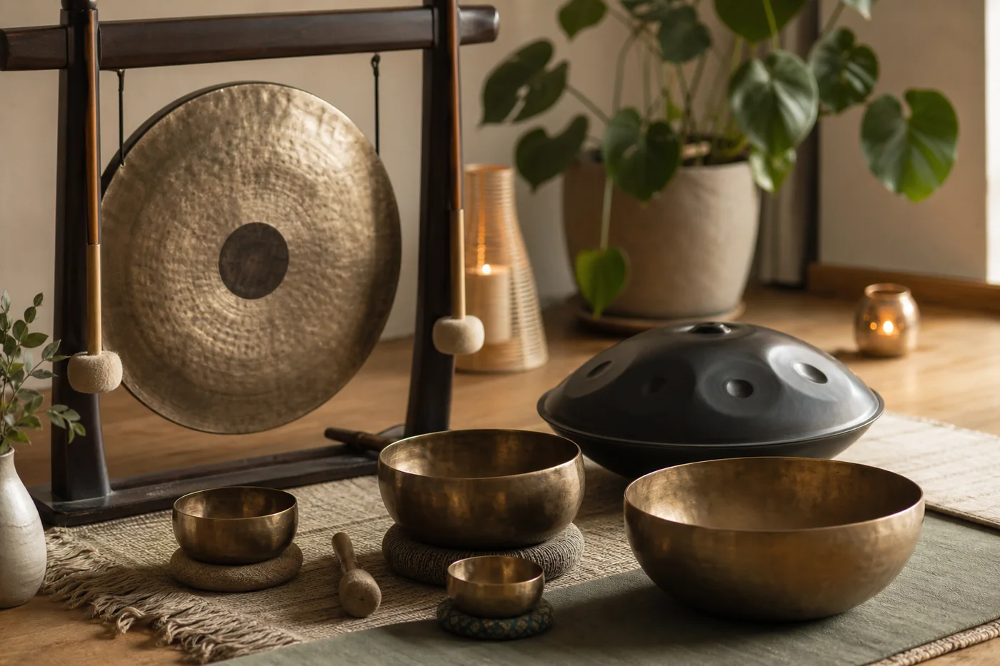
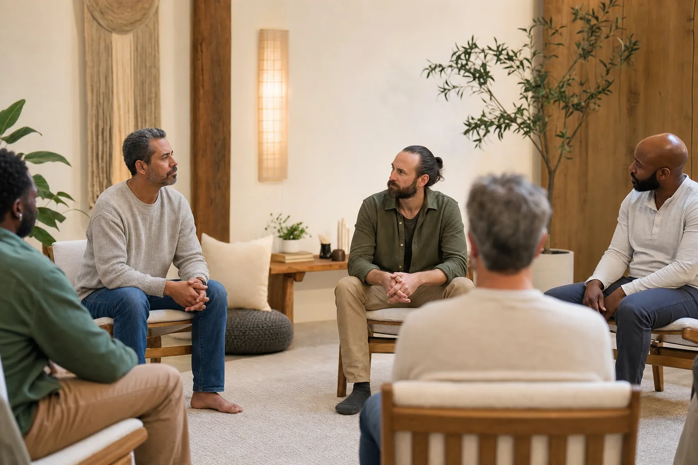

Warsztaty
Rozumieć.
Ćwiczyć. Wprowadzać.
Warsztat oznacza drogę od wiedzy do umiejętności, która znajduje miejsce w codziennym życiu.
Praktyka
Uważność w relacjach
Zauważanie siebie, emocji i tego, co wydarza się pomiędzy.
Zapytaj o termin
Nowy format
Relaksacja w dźwiękach
Gongi, misy, handpan i inne brzmienia wspierające wyciszenie.
Zapytaj o termin
W przygotowaniu
Krąg mężczyzn
Planowany format spotkań o relacjach, emocjach i sprawczości.
Zapisy wkrótceZapisy
Chcesz dowiedzieć się
więcej?
Warsztaty i wydarzenia mają własne terminy oraz sposób zapisu. Napisz, a przekażemy aktualne informacje.
Napisz w sprawie warsztatów →